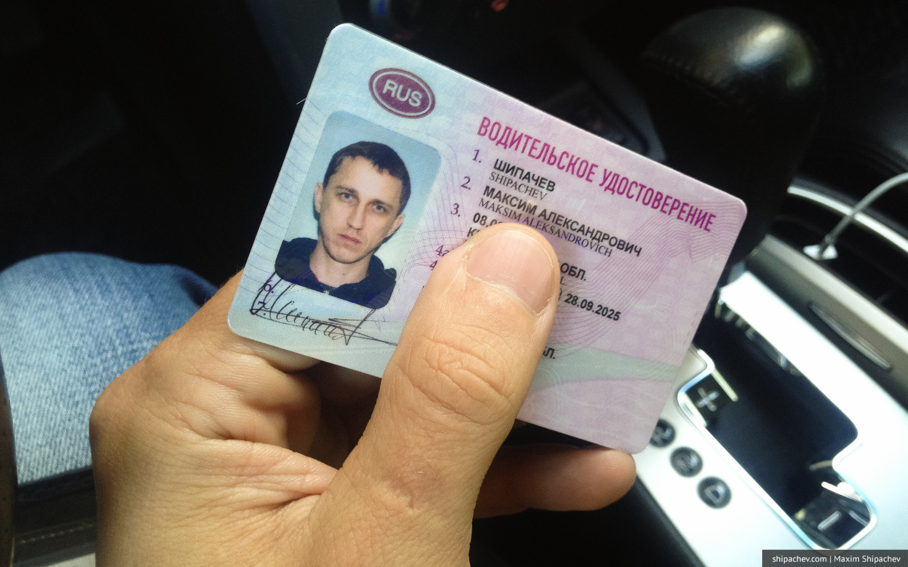
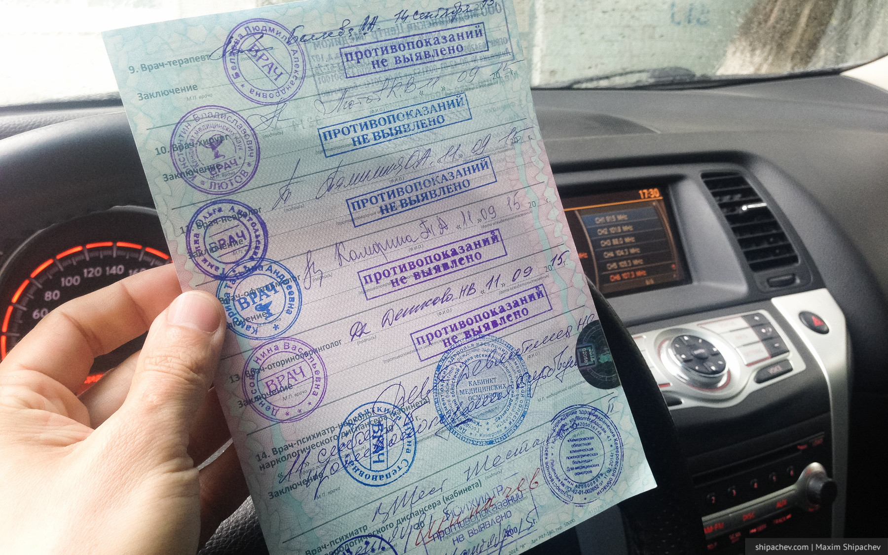

10 лет прошло с тех пор как я стал обладателем водительского удостоверения. Я мог бы «сдать на права» и раньше, в средней школе, но не срослось с преподавателем и, вместо уроков автодела я осваивал азы малого бизнеса, продавая шоколадки в школьном киоске другим ученикам.
Процедура замены водительского удостоверения в Кемерове, хоть и довольно банальная, но я сразу назначил ей статус «лягушки» в терминологии книг по тайм-менеджменту. Мало найдётся любителей проводить время на медкомиссиях и гулять по фотосалонам, банкам и наркологиям.
Теперь, когда новое удостоверение лежит в бумажнике, можно описать всю процедуру замены прав.

Чтобы получить новое водительское удостоверение вам необходимы следующие документы:
- паспорт
- справка о прохождении медкомиссии
- фотография 3х4
- старое водительское удостоверение
- военный билет (необходим водителям-мужчинам)
Весь путь, теоретически, можно пройти за три дня.
Ещё нужно запастись терпением, смирением и 3711 рублями. Вся описанная процедура действительна для категории B, единственной. Если категорий несколько, то стоимость немного вырастет. Для разрешения водить автобусы, возможно, понадобятся ещё какие-то документы.
Шаг 1. Фотография
Делаем в фотосалоне чёрно-белую фотографию 3х4. Одну делать отказались, сделали две. Стоимость 140 рублей. Фотография понадобится, чтобы было что наклеивать на медицинскую справку.
Шаг 2. Флюорография
Флюорография с результатом «на следующий день» обошлась в 5-й поликлинике в 155 рублей.
Шаг 3. Начало медосмотра
Медосмотр я проходил в медицинском центре «Медиком», что в 5-й поликлинике. Сейчас таких медицинских центров несколько, стоимость может отличаться. Но, в любом случае, психиатра и нарколога вам придётся проходить в государственной больнице на Волгоградской.
Медосмотр делится на несколько этапов. Сначала тебе в обмен на флюорографию и фотографию дают карточку, в которую ты будешь собирать штампы врачей. За карточку нужно будет заплатить 700 рублей. Банковские карты принимают.
До обеда в «Медикоме» с тебя снимут электрокардиограмму, проверят слух, проверят кожу. Слух у меня раньше не проверяли, это оказалась довольно забавная процедура: ты надеваешь наушники и в разные уши прибор подаёт сигналы разной частоты и разной громкости, когда ты слышишь звук, нужно нажать на кнопку. Известно, что к старости у людей снижается способность слышать звуки высокой частоты. Старость ещё не пришла, поэтому проходим этот тест, несмотря на то, что доктор сидит рядом и шелестит газетой, а тебе даже жарко от желания влезть в наушники целиком.
Шаг 4. «Психушка» и наркология
Самый сложный этап. На самом деле это два этапа. Чтобы пройти каждый, нужно самостоятельно заполнить договор на обслуживание, согласие на обработку персональных данных и, конечно, заплатить.
494 рубля — нарколог, 182 — психиатр.
Нарколог принимает карты, психиатр — нет.
С психиатром проще. Он проверяет тебя по базе, спрашивает не псих ли ты и смотрит в военный билет в поисках «своих статей». Смысл военного билета остаётся неясным. Доктор сказал, что, если его нет, процедура будет сложнее. В то же время для женщин она остаётся той же самой.
С наркологом куда сложнее. Или проще. Самая фишка наркологии в том, что ты должен сдать анализ мочи. Но ведь любой наркоман может подменить мочу, скажешь ты, и будешь прав. В наркологии работают умные люди, поэтому мочу ты должен сдавать при них. Прямо стоишь и мочишься изо всех сил в пластиковый стаканчик. Доктор даже включает водичку из крана. Это мило. Девушкам, вероятно, сложнее. Девушкам-крестьянкам со стыдливым румянцем на лице — вообще хоть на права не сдавай.
Когда всё получилось (а рядом со мной два врача обсуждали пирожки с капустой на «Соколе»), ты держишь стаканчик, а врач опускает туда несколько полосок-индикаторов. Если всё хорошо, то ставит штампик. С первого раза у меня не вышло. Это вообще первый раз, когда у меня не вышло с женщиной, поэтому я стыдливо бежал в подвальный буфет за бутылкой воды.
После полосок-индикаторов ты идёшь посидеть в другой очереди. Там нарколог тоже пробивает тебя по базе задаёт пару вопросов про жизнь и ставит штампик.
Людей достаточно много, работают до 17 часов, в том числе в выходные. Анализы сдают не только водители, но и желающие получить разрешение на оружие и все госслужащие. Помни это, когда будешь думать, что у чиновника не жизнь, а мёд.
Шаг 5. Окончание медосмотра
Остался последний этап медосмотра, причём нужно помнить, что в «Медикоме» врачи первого этапа работают только до обеда, а врачи второго этапа только после.
Быстро проходим хирурга (травмы были? сотрясения? потери сознания? как это сотрясение было, а потери сознания не было?) медленно сидим в очереди к офтальмологу и терапевту. Офтальмолог проверяет зрение, терапевт измеряет давление (вы наверное давно не кушали?) и ставит последнюю Главную Печать, закрывая квест.
Эту справку стоит бережно хранить два года. Действительна она именно столько, и, в случае утери водительского удостоверения в этот период, вы сэкономите деньги и анализы.

Шаг 6. Получение водительского удостоверения
Для того, чтобы получить новое водительское удостоверение придётся ещё раз заплатить. Сумма немаленькая — 2000 рублей. + 40 рублей комиссии. Заплатить можно в Кузбассхимбанке на Двужильного, который, подозреваю, для того там и создан.
Выдают удостоверения в относительно недавно построенном Центре безопасности дорожного движения ГИБДД Кемеровской области на Баумана, 59а. Работает он с 8:30 до 17 часов с понедельника по субботу. Нужно помнить, что в понедельник принимают только водителей, оформивших получение удостоверения через сервис «Госуслуги». Я не знал об этой особенности и приехал в понедельник часов в 9. Кроме меня, похоже, во всём здании был только два сотрудника.
Один сотрудник принял заявление (опять придётся заполнять «от руки») и даже отксерокопировал медицинскую справку (сдавать нужно её копию). Другая сфотографировала меня (подбородок выше, рот прикройте) и напечатала права на цветном принтере, заламинировав их потом на обычном ламинаторе.
Вместо старых тёплых ламповых прав я получил какую-то лотерейку.